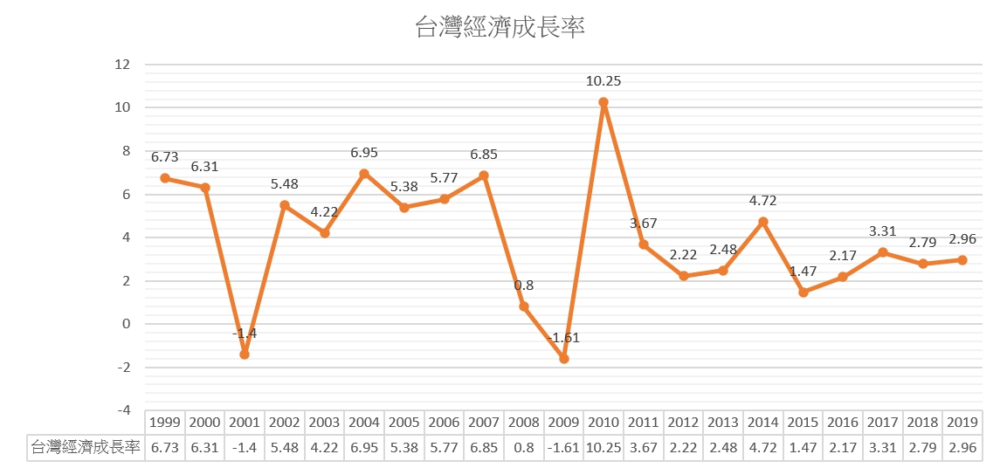
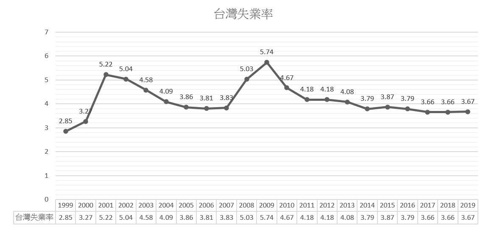
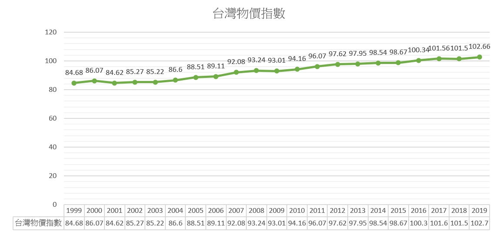
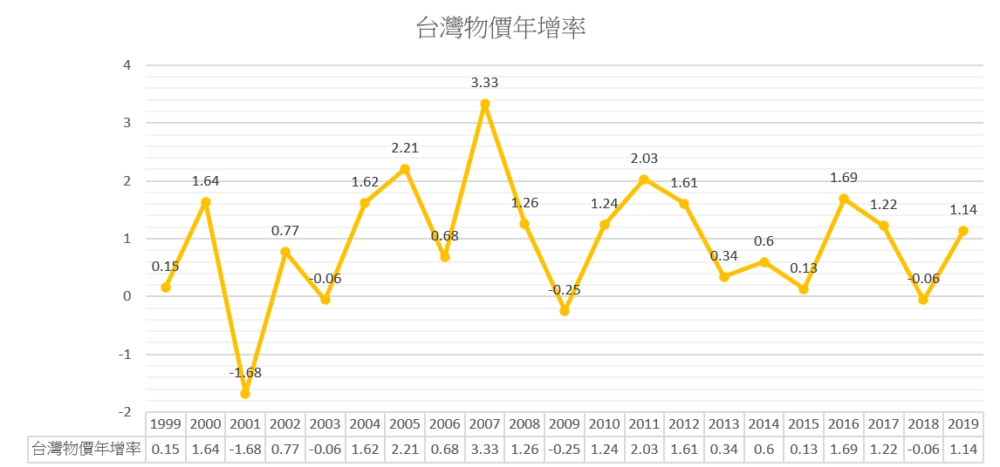

1999~2019年 台灣總體經濟表現
經濟成長率
一國的經濟成長指該國實質總產出或每人平均實質國民所得持續不斷增加的現象。通常所謂經濟成長率 ( economic growth
rate ) 是指「實質總產出」或「實質國內生產毛額 (gdp) 」的年增率。
國際間多以經濟成長率作為表示一國經濟實力、人民福祉和國際地位的指標。
通常經濟成長變動表現可從三個方面觀察：
(1)需求面，反映消費、資本形成及淨出口支出內容的相對改變
(2)生產面，反映農業、工業及服務業產出的相對變化
(3)分配面，反映勞動與資本等生產要素報酬的相對變化

1999~2019年 台灣總體經濟表現
失業率
勞動力係指年滿15歲可以工作之民間人口，包括就業者及失業者。如年滿15歲因就學、料理家務、高齡、身心障礙、想工作而未找工作及其他原因等而未工作亦未找工作者，則不屬於勞動力之民間人口。
1. 失業者在勞動力中所占之比率稱為失業率。計算方法如下：
失業率（%）= 失業者/勞動力 * 100%
= 失業者/（失業者+就業者）*100%
2. 廣義失業率較失業率多納入了非勞動力之中的「想工作而未找工作且隨時可以開始工作者」
廣義失業率(%)= （失業者 + 想工作而未找工作且隨時可以開始工作者) *100%

1999~2019年 台灣總體經濟表現
物價指數
物價指數亦稱「商品價格指數」。是一個衡量市場上物價總水準變動情況的指數。物價總水準上升則意味著發生了通貨膨脹，反之，物價總水準下降意味著通貨緊縮，物價指數正是用來衡量經濟中發生的通貨膨脹或是通貨緊縮的一個指標。
編制物價指數可分析物價變動對國民經濟與人民生活的影響，從而制定有關物價巨集觀調控政策，加強物價管理提供依據。同時，也為企業做出相應的經濟決策提供依據。

1999~2019年 台灣總體經濟表現
物價年增率
指臺灣地區消費者物價指數增減數占上期臺灣地區消費者物價指數之百分比。
計算方式為：(當期臺灣地區消費者物價指數增減數÷上期臺灣地區消費者物價指數)×100
